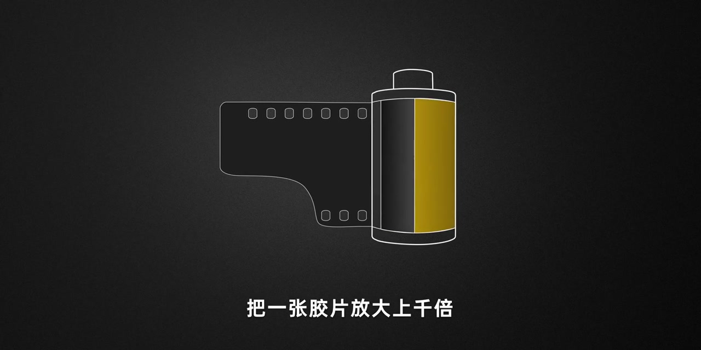
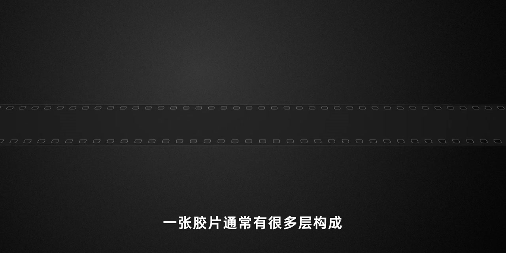
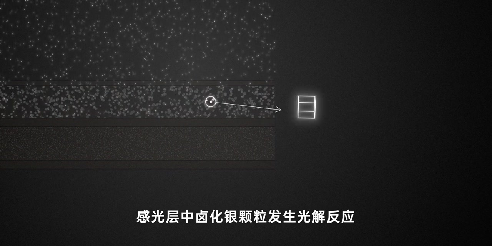
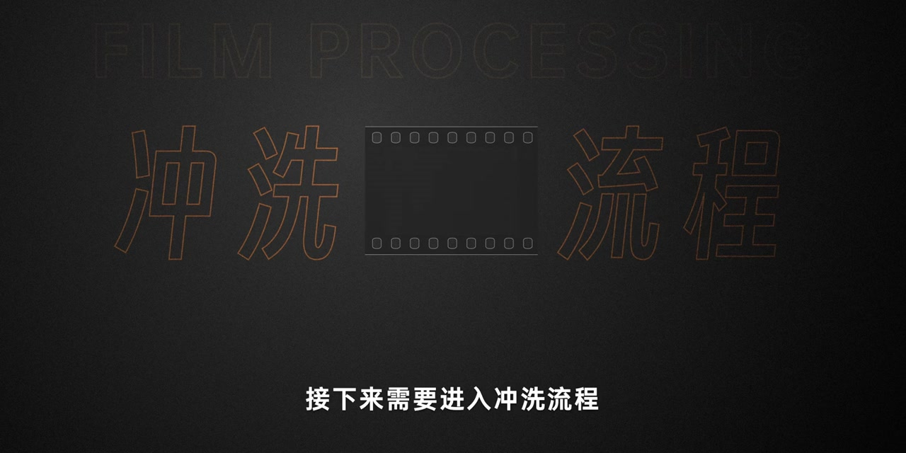
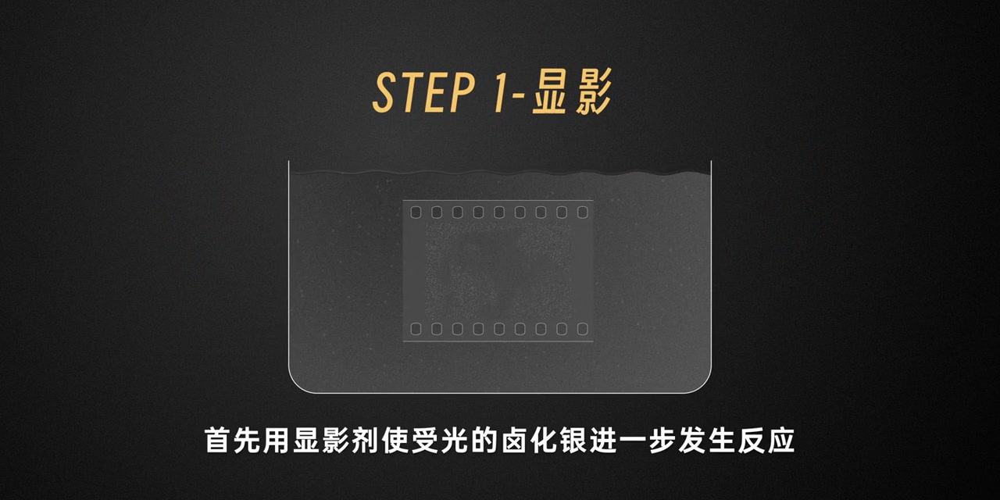
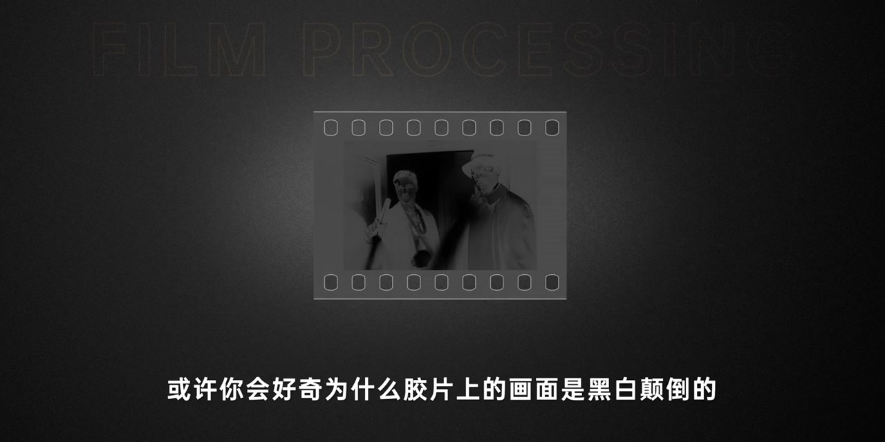
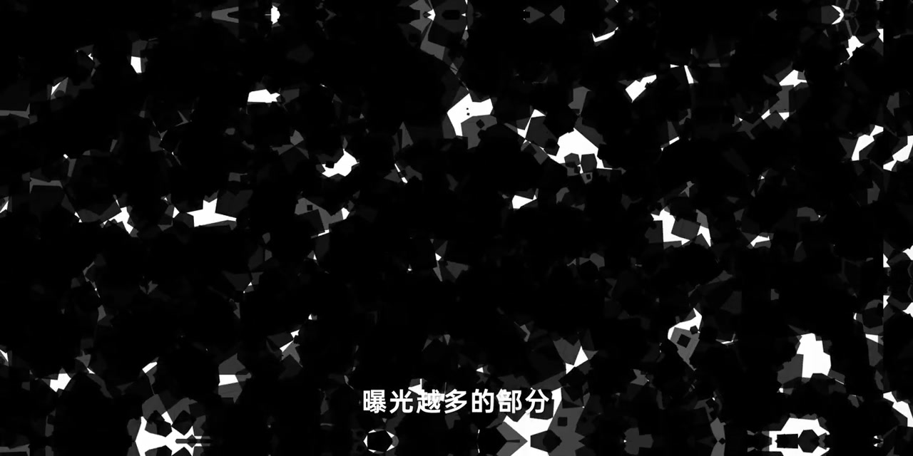
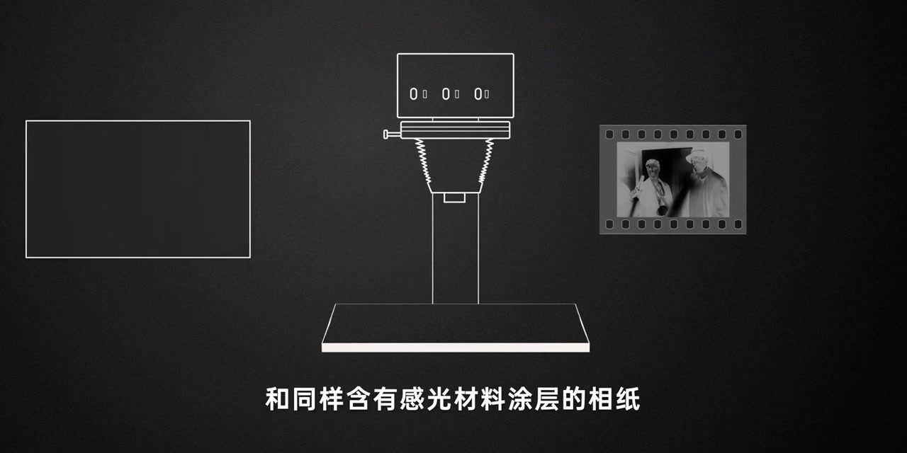

开场：把胶片放大上千倍，看见卤化银
深灰底上先出现一卷 135 胶卷线稿，旁白把镜头拉近：把一张胶片放大上千倍，会看到很多颗粒状物质。那是感光材料——卤化银，由卤素与银形成的化合物，也是胶片能感光成像的关键物质。
画面字幕：「把一张胶片放大上千倍」
说明：Whisper 常把「卤化银」识成「鲁化银」、「感光材料」识成「光明材料」、「片基层」识成「骗机层」、「潜影核」识成「潜影盒」、「负片」识成「副片」、「负负得正」识成「复复得正」。下文叙述以可见字幕与动画画面为准；页面末尾仍完整保留全部 Whisper 分段。

结构：感光乳剂层叠在片基层上
画面切到一条横贯画面的胶片轮廓。旁白交代：一张胶片通常有很多层；其中最主要的，是混合了明胶与卤化银的感光乳剂层，以及承载它们的片基层。
画面字幕：「一张胶片通常有很多层构成」

曝光：光解反应留下看不见的潜影
剖面图里，上层稀疏的亮点像光子落下，中层挤满立方体状的卤化银颗粒。旁白说：光线照射到胶片上，感光层中的卤化银颗粒发生光解反应，在感光点位生成微小的银原子团簇，称之为潜影核。影像此时已经被记录，但光解银量极少，肉眼看不见，仍处于潜影状态。
画面字幕：「感光层中卤化银颗粒发生光解反应」

转折：接下来进入冲洗流程
画面切到「FILM PROCESSING / 冲洗流程」标题卡，胶片条图标夹在大字中间。旁白只留一句过渡：接下来需要进入冲洗流程——潜影要变成可见影像，得靠药液一步步放大与固定。
画面字幕：「接下来需要进入冲洗流程」

冲洗四步：显影、停显、定影、水洗
STEP 1 显影：药盆里泡着一条负片，字幕解释具有潜影核的卤化银会被还原成金属银颗粒；大量金属银颗粒聚集，就构成可见影像。接着用停显液——弱酸性中和显影液，让反应停住。再用含硫代硫酸钠的定影液，把未感光的卤化银溶解掉，使胶片不能再感光。最后清洗残留成分。完整走完，胶片就变成我们熟悉的底片样子。
画面字幕：「具有潜影核的卤化银会被还原成金属银颗粒」

疑问：为什么胶片上画面黑白颠倒？
冲洗完成后的负片居中出现：两个人影的明暗与实景相反。旁白抛出好奇：为什么胶片上的画面是黑白颠倒的？直觉上曝光强的部分应该明亮，但胶片上曝光强的部分反而变黑。
画面字幕：「或许你会好奇为什么胶片上的画面是黑白颠倒的」

答案：金属银颗粒本身呈黑色
画面切到高感颗粒纹理的特写，旁边有几何色块示意。旁白给出因果：卤化银感光显影后形成的金属银颗粒本身呈黑色；曝光越多，金属银越多，画面越黑；曝光越少，金属银越少，看上去更亮。这样黑白颠倒的底片，被称为负片。
画面字幕：「这是因为卤化银感光显影之后形成的金属银颗粒」

收尾：放大机把负像投到相纸，负负得正
线稿画出放大机与负片：想把负片还原成正常照片，需要胶片放大机，以及同样涂有感光材料的相纸。把胶片上的负像投影到相纸，相纸接收到与实景相反的曝光；再冲洗一遍，负负得正，就能还原正常照片。
画面字幕：「和同样含有感光材料涂层的相纸」
